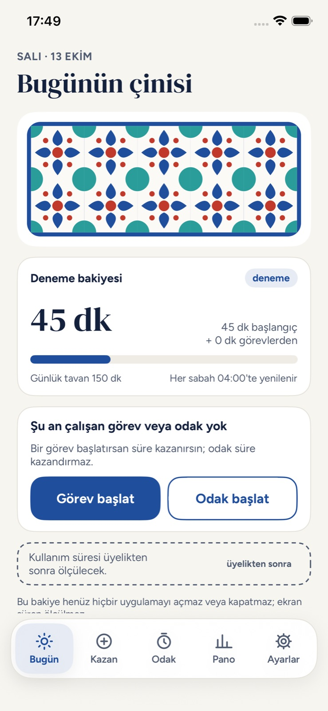
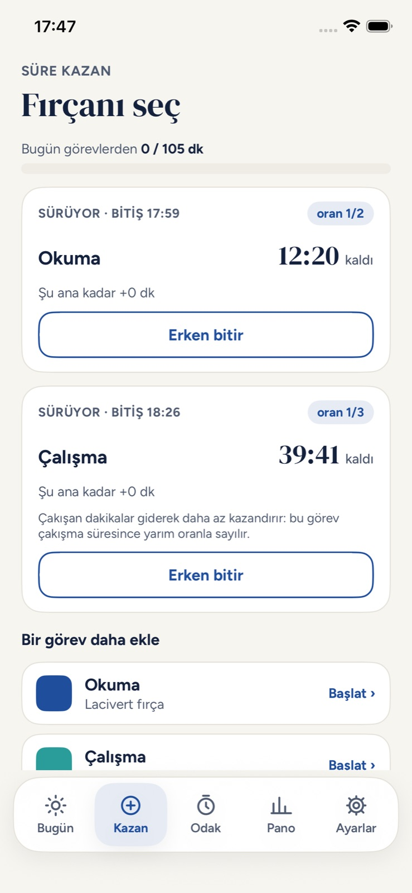
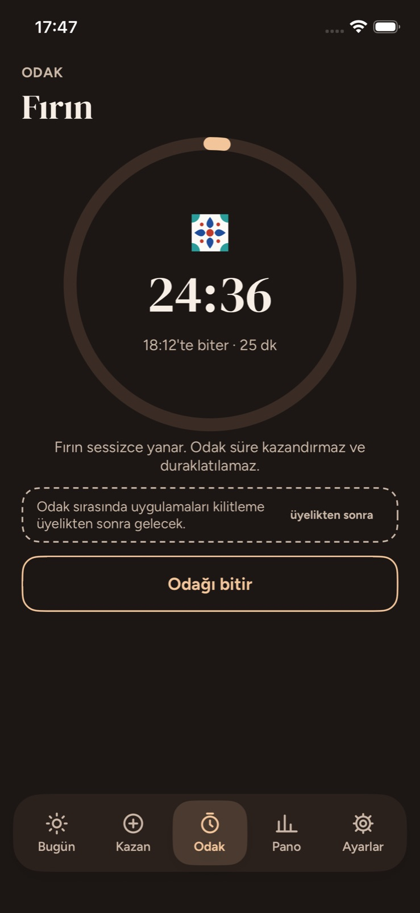
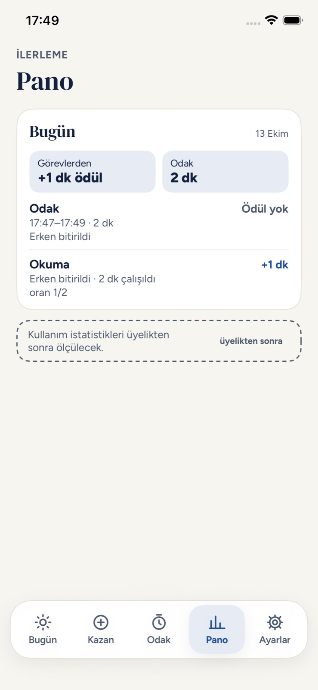
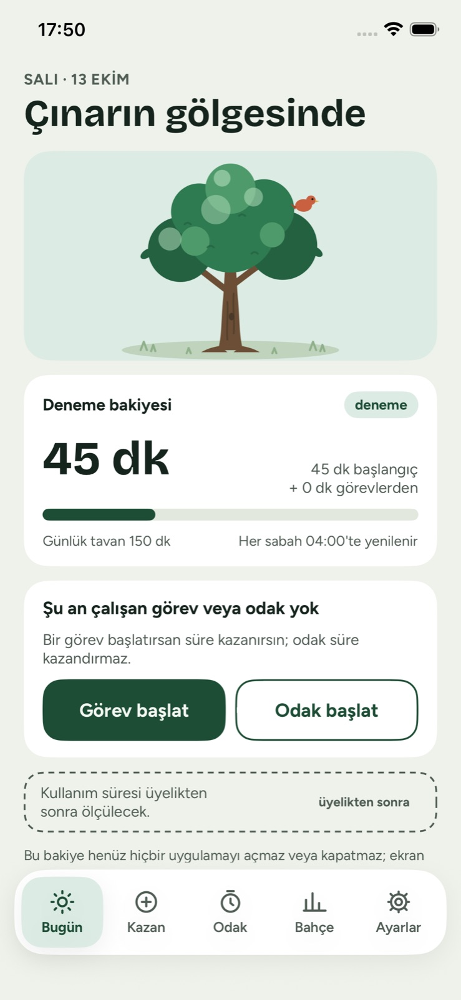
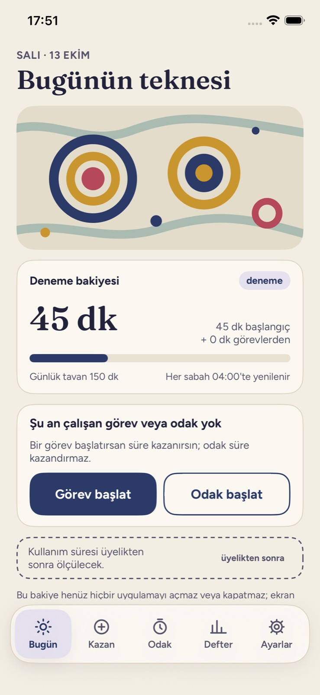
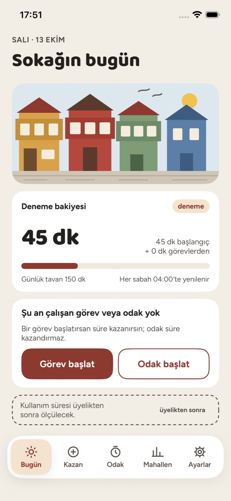
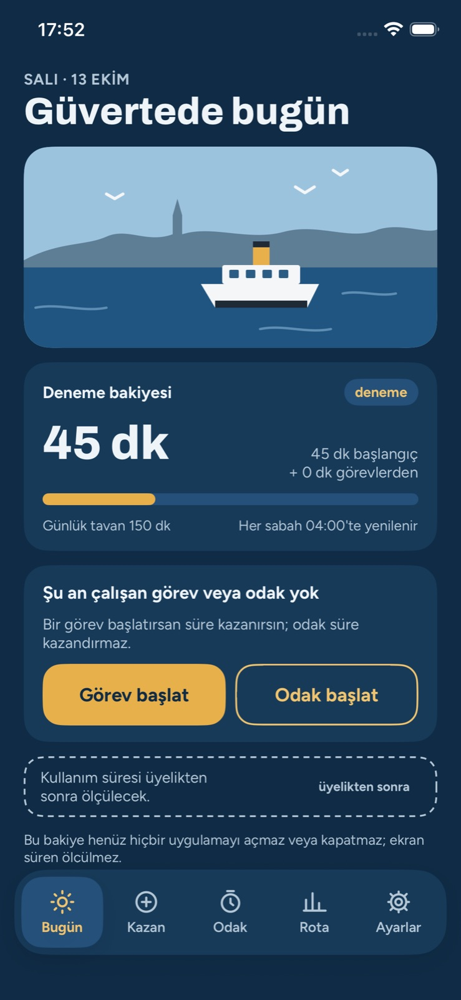

Denge
Denge
iPhone uygulaması
Ekran süreni kazan, dengede kal.
Denge, telefonda geçirdiğin süreyi okuyarak ya da çalışarak kazandığın süreyle dengeler. Görev başlatırsın, süre işler, emeğin karşılığı bakiyene yazılır.
Geliştirme aşamasında · henüz App Store'da değil
Nasıl çalışır
Önce emek, sonra ekran.
Her gün küçük bir başlangıç bakiyesiyle başlarsın. Fazlasını görevlerle kazanırsın; günlük bir üst sınır, kazancın kontrolden çıkmasını önler.
Görev başlat
Okuma ya da çalışma seç, süreyi ve zorluk oranını belirle. Aynı anda birden fazla görev çalışabilir.
Süre kazan
Ödül, çalıştığın süre çarpı seçtiğin oran. Erken bitirirsen geçen süre kadarını alırsın. Gün sabah 04:00'te yenilenir.
Odaklan
Odak oturumu süre kazandırmaz ve duraklatılamaz; dikkatini toplamak içindir. Biten her oturum İlerleme'de görünür.



Temalar
Beş tema, her biri kendi dünyası.
Bir temaya dokun, uygulama ona bürünsün. Tema yalnızca görünümü değiştirir; bakiye, görev ve kayıtların aynı kalır.
Seçili tema
Çini
- Bugün
- Bugünün çinisi
- Kazan
- Fırçanı seç
- Odak
- Fırın
- İlerleme
- Pano




Durum
Nerede olduğunu açıkça söylüyoruz.
Şu an
- Çalışan bir iPhone prototipi: görevler, odak, ilerleme ve beş tema.
- Bütün kayıtlar telefonda tutulur; hesap ve sunucu yok.
- Bakiye bir deneme bakiyesidir.
Deneme bakiyesi henüz hiçbir uygulamayı açmaz veya kapatmaz; ekran süren ölçülmez.
Hedef
- Kontrol etmek istediğin uygulamaları seçmek.
- Kazandığın süre bitince erişimin yeniden kısıtlanması.
- Adımla süre kazanma.
- Türkçe, anlaşılır ve ulaşılabilir bir deneyim.